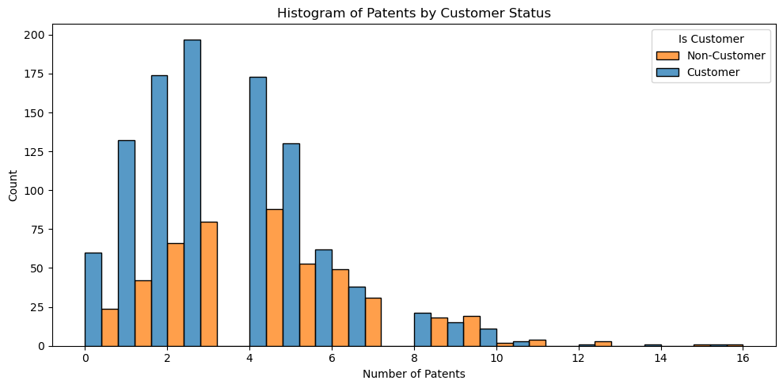
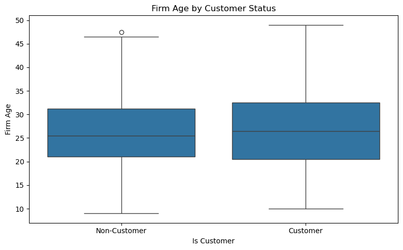
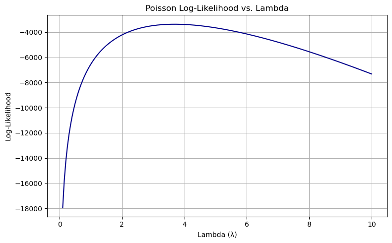

import pandas as pd
blueprinty = pd.read_csv('blueprinty.csv')
blueprinty.head()| patents | region | age | iscustomer | |
|---|---|---|---|---|
| 0 | 0 | Midwest | 32.5 | 0 |
| 1 | 3 | Southwest | 37.5 | 0 |
| 2 | 4 | Northwest | 27.0 | 1 |
| 3 | 3 | Northeast | 24.5 | 0 |
| 4 | 3 | Southwest | 37.0 | 0 |
| patents | region | age | iscustomer | |
|---|---|---|---|---|
| 0 | 0 | Midwest | 32.5 | 0 |
| 1 | 3 | Southwest | 37.5 | 0 |
| 2 | 4 | Northwest | 27.0 | 1 |
| 3 | 3 | Northeast | 24.5 | 0 |
| 4 | 3 | Southwest | 37.0 | 0 |
import matplotlib.pyplot as plt
import seaborn as sns
# Compute mean number of patents by customer status
mean_patents = blueprinty.groupby("iscustomer")["patents"].mean()
# Plot histogram of number of patents by customer status
plt.figure(figsize=(10, 5))
sns.histplot(data=blueprinty, x="patents", hue="iscustomer", multiple="dodge", bins=20)
plt.title("Histogram of Patents by Customer Status")
plt.xlabel("Number of Patents")
plt.ylabel("Count")
plt.legend(title="Is Customer", labels=["Non-Customer", "Customer"])
plt.tight_layout()
mean_patentsiscustomer
0 3.473013
1 4.133056
Name: patents, dtype: float64
# Boxplot for firm age by customer status
plt.figure(figsize=(8, 5))
sns.boxplot(x="iscustomer", y="age", data=blueprinty)
plt.title("Firm Age by Customer Status")
plt.xlabel("Is Customer")
plt.ylabel("Firm Age")
plt.xticks([0, 1], ["Non-Customer", "Customer"])
plt.tight_layout()
# Crosstab for region by customer status
region_customer_crosstab = pd.crosstab(blueprinty["region"], blueprinty["iscustomer"], normalize='index') * 100
region_customer_crosstab.round(1)| iscustomer | 0 | 1 |
|---|---|---|
| region | ||
| Midwest | 83.5 | 16.5 |
| Northeast | 45.4 | 54.6 |
| Northwest | 84.5 | 15.5 |
| South | 81.7 | 18.3 |
| Southwest | 82.5 | 17.5 |

import numpy as np
from scipy.special import gammaln
def poisson_loglikelihood(lmbda, Y):
"""
Computes the negative log-likelihood of a Poisson model with scalar lambda.
This is suitable for optimization routines like scipy.optimize.minimize.
Parameters:
lmbda : float
The Poisson rate parameter (λ), must be > 0.
Y : array-like
Observed count data (e.g., number of patents).
Returns:
float : negative log-likelihood
"""
if lmbda <= 0:
return np.inf # avoid invalid log(λ) or exp(−λ)
Y = np.asarray(Y)
log_lik = np.sum(Y * np.log(lmbda) - lmbda - gammaln(Y + 1))
return log_lik import matplotlib.pyplot as plt
Y = blueprinty["patents"].values
lambda_vals = np.linspace(0.1, 10, 200)
loglik_vals = [poisson_loglikelihood(lmb, Y) for lmb in lambda_vals]
plt.figure(figsize=(8, 5))
plt.plot(lambda_vals, loglik_vals, color='darkblue')
plt.title("Poisson Log-Likelihood vs. Lambda")
plt.xlabel("Lambda (λ)")
plt.ylabel("Log-Likelihood")
plt.grid(True)
plt.tight_layout()
plt.show()
from scipy.optimize import minimize
# Define the negative log-likelihood for use with optimizer
def neg_poisson_loglikelihood(lmbda, Y):
if lmbda <= 0:
return np.inf
return -poisson_loglikelihood(lmbda, Y)
# Use the same Y from earlier
Y = blueprinty["patents"].values
# Use scipy to minimize the negative log-likelihood
result = minimize(fun=neg_poisson_loglikelihood, x0=[1.0], args=(Y,), bounds=[(1e-6, None)])
lambda_mle = result.x[0]
lambda_mle3.6846667021660804import numpy as np
from scipy.special import gammaln
# Define Poisson log-likelihood function (negative, stabilized)
def poisson_regression_loglik(beta, Y, X):
eta = X @ beta
eta = np.clip(eta, -20, 20) # Prevent overflow in exp()
lam = np.exp(eta)
log_lik = np.sum(Y * eta - lam - gammaln(Y + 1))
return -log_lik # Return negative for minimizerimport pandas as pd
import numpy as np
from scipy.optimize import minimize
from scipy.special import gammaln
import patsy
# Create design matrix with intercept, age, age², region dummies, and customer
y, X = patsy.dmatrices('patents ~ age + I(age**2) + C(region) + iscustomer', data=blueprinty, return_type='dataframe')
Y = y.values.flatten() # Convert y to 1D
# Initial guess for beta
beta0 = np.zeros(X.shape[1])
# Optimize the likelihood
result = minimize(poisson_regression_loglik, beta0, args=(Y, X), method='BFGS')
# Extract MLE estimates and standard errors
beta_hat = result.x
hessian_inv = result.hess_inv
standard_errors = np.sqrt(np.diag(hessian_inv))
# Present results in table
results_df = pd.DataFrame({
"Coefficient": beta_hat,
"Std. Error": standard_errors
}, index=X.columns)
print(results_df.round(4)) Coefficient Std. Error
Intercept -0.5100 0.1931
C(region)[T.Northeast] 0.0292 0.0468
C(region)[T.Northwest] -0.0176 0.0572
C(region)[T.South] 0.0566 0.0562
C(region)[T.Southwest] 0.0506 0.0497
age 0.1487 0.0145
I(age ** 2) -0.0030 0.0003
iscustomer 0.2076 0.0329import statsmodels.api as sm
# Fit Poisson GLM with log link
glm_model = sm.GLM(Y, X, family=sm.families.Poisson())
glm_results = glm_model.fit()
# Display summary table
print(glm_results.summary()) Generalized Linear Model Regression Results
==============================================================================
Dep. Variable: y No. Observations: 1500
Model: GLM Df Residuals: 1492
Model Family: Poisson Df Model: 7
Link Function: Log Scale: 1.0000
Method: IRLS Log-Likelihood: -3258.1
Date: Sun, 04 May 2025 Deviance: 2143.3
Time: 17:40:46 Pearson chi2: 2.07e+03
No. Iterations: 5 Pseudo R-squ. (CS): 0.1360
Covariance Type: nonrobust
==========================================================================================
coef std err z P>|z| [0.025 0.975]
------------------------------------------------------------------------------------------
Intercept -0.5089 0.183 -2.778 0.005 -0.868 -0.150
C(region)[T.Northeast] 0.0292 0.044 0.669 0.504 -0.056 0.115
C(region)[T.Northwest] -0.0176 0.054 -0.327 0.744 -0.123 0.088
C(region)[T.South] 0.0566 0.053 1.074 0.283 -0.047 0.160
C(region)[T.Southwest] 0.0506 0.047 1.072 0.284 -0.042 0.143
age 0.1486 0.014 10.716 0.000 0.121 0.176
I(age ** 2) -0.0030 0.000 -11.513 0.000 -0.003 -0.002
iscustomer 0.2076 0.031 6.719 0.000 0.147 0.268
==========================================================================================# Create two counterfactual design matrices:
# - X_0: assumes all firms are non-customers (iscustomer = 0)
# - X_1: assumes all firms are customers (iscustomer = 1)
X_0 = X.copy()
X_1 = X.copy()
X_0["iscustomer"] = 0
X_1["iscustomer"] = 1
# Predict expected number of patents under both scenarios
y_pred_0 = np.exp(X_0 @ beta_hat)
y_pred_1 = np.exp(X_1 @ beta_hat)
# Compute difference and average effect
diff = y_pred_1 - y_pred_0
average_effect = diff.mean()
print(f"Average treatment effect of Blueprinty's software: {average_effect:.4f} additional patents")Average treatment effect of Blueprinty's software: 0.7928 additional patents<class 'pandas.core.frame.DataFrame'>
RangeIndex: 40628 entries, 0 to 40627
Data columns (total 14 columns):
# Column Non-Null Count Dtype
--- ------ -------------- -----
0 Unnamed: 0 40628 non-null int64
1 id 40628 non-null int64
2 days 40628 non-null int64
3 last_scraped 40628 non-null object
4 host_since 40593 non-null object
5 room_type 40628 non-null object
6 bathrooms 40468 non-null float64
7 bedrooms 40552 non-null float64
8 price 40628 non-null int64
9 number_of_reviews 40628 non-null int64
10 review_scores_cleanliness 30433 non-null float64
11 review_scores_location 30374 non-null float64
12 review_scores_value 30372 non-null float64
13 instant_bookable 40628 non-null object
dtypes: float64(5), int64(5), object(4)
memory usage: 4.3+ MB
None
Missing values per column:
Unnamed: 0 0
id 0
days 0
last_scraped 0
host_since 35
room_type 0
bathrooms 160
bedrooms 76
price 0
number_of_reviews 0
review_scores_cleanliness 10195
review_scores_location 10254
review_scores_value 10256
instant_bookable 0
dtype: int64
First few rows:
| Unnamed: 0 | id | days | last_scraped | host_since | room_type | bathrooms | bedrooms | price | number_of_reviews | review_scores_cleanliness | review_scores_location | review_scores_value | instant_bookable | |
|---|---|---|---|---|---|---|---|---|---|---|---|---|---|---|
| 0 | 1 | 2515 | 3130 | 4/2/2017 | 9/6/2008 | Private room | 1.0 | 1.0 | 59 | 150 | 9.0 | 9.0 | 9.0 | f |
| 1 | 2 | 2595 | 3127 | 4/2/2017 | 9/9/2008 | Entire home/apt | 1.0 | 0.0 | 230 | 20 | 9.0 | 10.0 | 9.0 | f |
| 2 | 3 | 3647 | 3050 | 4/2/2017 | 11/25/2008 | Private room | 1.0 | 1.0 | 150 | 0 | NaN | NaN | NaN | f |
| 3 | 4 | 3831 | 3038 | 4/2/2017 | 12/7/2008 | Entire home/apt | 1.0 | 1.0 | 89 | 116 | 9.0 | 9.0 | 9.0 | f |
| 4 | 5 | 4611 | 3012 | 4/2/2017 | 1/2/2009 | Private room | NaN | 1.0 | 39 | 93 | 9.0 | 8.0 | 9.0 | t |
# Drop rows with missing values in key predictors
airbnb_clean = airbnb.dropna(subset=[
"bathrooms",
"bedrooms",
"review_scores_cleanliness",
"review_scores_location",
"review_scores_value"
])
# Convert categorical variables
airbnb_clean["instant_bookable"] = airbnb_clean["instant_bookable"].map({"t": 1, "f": 0})
# One-hot encode room_type, drop one category to avoid multicollinearity
room_dummies = pd.get_dummies(airbnb_clean["room_type"], prefix="room", drop_first=True)
# Construct design matrix
X = pd.concat([
airbnb_clean[[
"price",
"bedrooms",
"bathrooms",
"review_scores_cleanliness",
"review_scores_location",
"review_scores_value",
"instant_bookable"
]],
room_dummies
], axis=1)
# Add intercept manually
X.insert(0, "intercept", 1)
# Define target variable
Y = airbnb_clean["number_of_reviews"].values
# Show dimensions for confirmation
print("X shape:", X.shape)
print("Y shape:", Y.shape)X shape: (30160, 10)
Y shape: (30160,)/tmp/ipykernel_7096/1035868469.py:12: SettingWithCopyWarning:
A value is trying to be set on a copy of a slice from a DataFrame.
Try using .loc[row_indexer,col_indexer] = value instead
See the caveats in the documentation: https://pandas.pydata.org/pandas-docs/stable/user_guide/indexing.html#returning-a-view-versus-a-copy
airbnb_clean["instant_bookable"] = airbnb_clean["instant_bookable"].map({"t": 1, "f": 0})import statsmodels.api as sm
# Ensure all columns in X are numeric
X = X.astype(float)
# Fit the Poisson regression model
poisson_model = sm.GLM(Y, X, family=sm.families.Poisson())
poisson_results = poisson_model.fit()
# View the results
print(poisson_results.summary()) Generalized Linear Model Regression Results
==============================================================================
Dep. Variable: y No. Observations: 30160
Model: GLM Df Residuals: 30150
Model Family: Poisson Df Model: 9
Link Function: Log Scale: 1.0000
Method: IRLS Log-Likelihood: -5.2900e+05
Date: Mon, 05 May 2025 Deviance: 9.3653e+05
Time: 11:28:24 Pearson chi2: 1.41e+06
No. Iterations: 6 Pseudo R-squ. (CS): 0.5649
Covariance Type: nonrobust
=============================================================================================
coef std err z P>|z| [0.025 0.975]
---------------------------------------------------------------------------------------------
intercept 3.5725 0.016 223.215 0.000 3.541 3.604
price -1.435e-05 8.3e-06 -1.729 0.084 -3.06e-05 1.92e-06
bedrooms 0.0749 0.002 37.698 0.000 0.071 0.079
bathrooms -0.1240 0.004 -33.091 0.000 -0.131 -0.117
review_scores_cleanliness 0.1132 0.001 75.820 0.000 0.110 0.116
review_scores_location -0.0768 0.002 -47.796 0.000 -0.080 -0.074
review_scores_value -0.0915 0.002 -50.902 0.000 -0.095 -0.088
instant_bookable 0.3344 0.003 115.748 0.000 0.329 0.340
room_Private room -0.0145 0.003 -5.310 0.000 -0.020 -0.009
room_Shared room -0.2519 0.009 -29.229 0.000 -0.269 -0.235
=============================================================================================